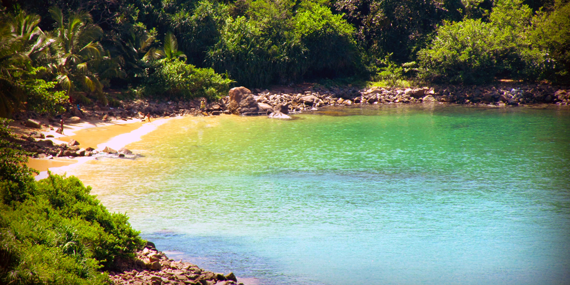
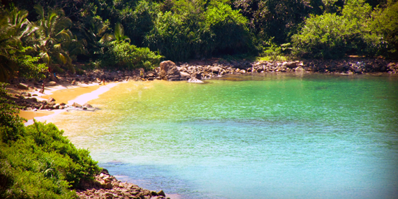
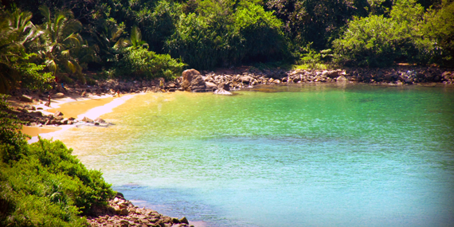

.png) 


Explore Galle's UNESCO-listed Fort with its cobblestone streets and colonial architecture. Relax on pristine beaches and witness breathtaking sunsets over the Indian Ocean. Immerse yourself in vibrant spice markets and indulge in the city's rich culinary delights. Discover the city's maritime heritage at the iconic Galle Lighthouse. Wander through narrow alleys lined with boutiques, art galleries, and charming cafes, and experience the timeless allure of Galle.

Join us on a visual journey and be inspired to create your own unforgettable memories. Let your wanderlust ignite as you explore the world through the lens of those who have traversed its paths before you. Welcome to a gallery where every image tells a story, and every story fuels the spirit of exploration.
| Category | Description | Locations |
|---|---|---|
| Local Markets | Explore the vibrant local markets of Galle, offering a wide array of traditional crafts, spices, and fresh produce. | |
| Souvenir Shops | Discover charming souvenir shops in Galle, where you can find unique gifts and souvenirs to take home. | |
| Boutiques | Indulge in shopping at boutique stores in Galle, offering trendy fashion and accessories. |